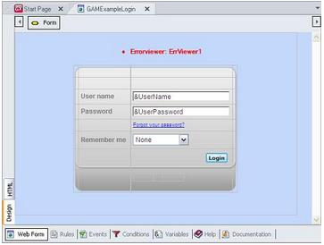
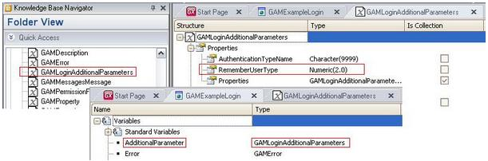
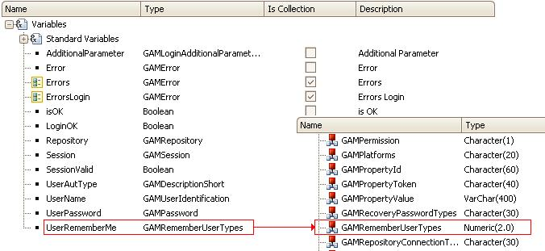
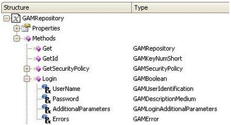
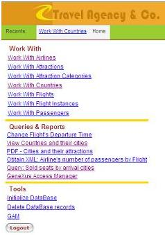

The GAM_Examples folder contains a large number of GeneXus objects. They are part of the GAM that is automatically installed in the KB when the property Enable Integrated Security is set to True. Some of them, such as GAMExampleLogin and GAMExampleHome, are used in the first sequence of screens for the session. They are both regular Web Panels with the right programming for the security system to perform its function. Even so, the developer will be allowed to make as many changes as needed; therefore, backing up the objects to be changed is recommended. A good practice could be to create a new folder, for instance “New Security System”, and copy the GeneXus objects from the GAM_Examples folder to this new folder and make the changes there. Actually, the objects saved in the GAM_Examples folder are precisely examples that show how to program the GAM and how to handle its API. ExamplesThe examples below show how to use the GAM API based on the feature programmed in a couple of sample Web Panels. Implementing AuthenticationThe authentication mechanism consists of using a Web Panel and some of the objects published as external objects in the GAM_Library folder. The Web Panel where the login mechanism is implemented through the GAM is GAMExampleLogin.  Basically, it has three variables which, in turn, are based on their corresponding domains included in GeneXus by default: &UserName, &UserPassword and &UserRememberMe. The label “Forgot your password” is just a text block with the SmallLink class that has been assigned the 'ForgotPassword' user event.
Lastly, the Login button is assigned to the Enter event.
Event Enter
&AdditionalParameter.RememberUserType = &UserRememberMe
&LoginOK = GAMRepository.Login(&UserName, &UserPassword, &AdditionalParameter, &Errors)
If not &LoginOK
If &Errors.Count > 0 and
(&Errors.Item(1).Code =
GAMErrorMessages.UserPasswordExpired or
&Errors.Item(1).Code =
GAMErrorMessages.UserPasswordMustBeChanged)
GAMExampleChangePassword(&UserAutType, &UserName, &UserRememberMe )
Else
Do 'DisplayMessages'
EndIf
Endif
EndEvent
Now look at the first equation, which uses the RememberUserType property of the &AdditionalParameter variable that is based on the external object GAMLoginAdditionalParameters. Look at the following images:  The Folder View shows the external object and its contents are displayed to the right. There, the property RememberUserType based on Numeric(2) is defined. The image at the front shows the AdditionalParameter variable of the Web Panel and its type, which in turn is assigned to the external object itself (actually, to any of its properties and methods). Now, in the image below we can see the relationship existing between the &UserRememberMe variable and the &AdditionalParameter variable:  Thus, the declaration: &AdditionalParameter.RememberUserType = &UserRememberMe ...assigns the value of the &UserRememberMe variable to the &AdditionalParameter variable through its RememberUserType property (this can be done since &AdditionalParameter is based on the external object. Therefore, it inherits all its properties and methods). Likewise, in the following declaration: &LoginOK = GAMRepository.Login(&UserName, &UserPassword, &AdditionalParameter, &Errors) ...the &LoginOK variable will receive the resulting value from the call to the Login method of the GAMRepository external object; in the DB_GAM, it will check whether the username and password are correct, which will return True or False. 
In the previous image, we can see part of the structure of the GAMRepository external object. Note that the Login method lists the four parameters sent in the declaration using variables. Solving the LogoutThe Logout can be easily implemented. In the image below, a button labeled Logout has been added to the front-end menu of an application.  In its event, the following has been programmed:
Event 'Logout'
GAMRepository.Logout(&Errors)
GAMExampleLogin()
EndEvent
The first instruction loads the user data in the GAM_DB repository. If errors occur, they are received in the SDT &Errors. The second instruction transfers the flow to the GAMExampleLogin Web Panel. That’s all. Examine the contents of all the events in the Web Panel’s Events tab, always using the same criteria described in the above examples.
|